DC Circuits Lectures 1–2
Everything starts here: what voltage, current and resistance actually are, how Ohm's law ties them together, and the rules and theorems used to solve any DC network. Master this page first — the AC material reuses every single idea.
1 Units, Prefixes & Notation
Electrical quantities span an enormous range — from picofarads (10−12) to megaohms (106). Engineers handle this with powers of ten and SI prefixes instead of writing long strings of zeros.
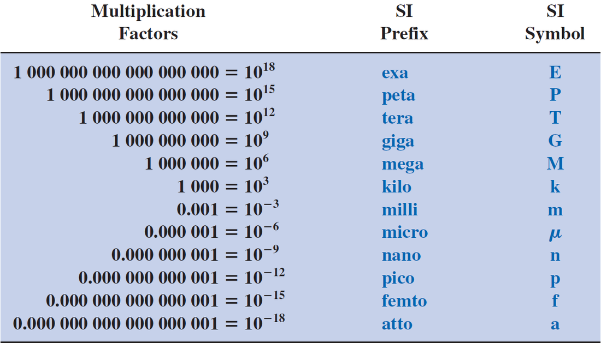
Three ways to write a number
Fixed-point keeps the decimal point in the same place (e.g. 0.063). Floating-point lets the number decide where the point goes. Scientific notation uses a power of ten with exactly one non-zero digit before the decimal point (e.g. 6.3 × 10−2).
Worked example — converting between prefix levels (from Lecture 1)
Convert 20 kHz to megahertz. Moving from kilo (10³) to mega (10⁶) means the multiplier grows by 10³, so the number must shrink by 10³:
20 \text{kHz} = 20 \times 10^{3} \text{Hz} = 0.02 \times 10^{6} \text{Hz} = 0.02 \text{MHz}
Rule of thumb: if the prefix gets bigger, the number gets smaller (and vice versa).
Reference: Boylestad, Introductory Circuit Analysis, Ch. 1.
2 Charge, Coulomb's Law & Voltage
Everything electrical begins with charge. Like charges repel, opposite charges attract, and the strength of that force is given by Coulomb's law:
- F – force of attraction/repulsion (newtons, N)
- k – constant = 9.0 × 10⁹ N·m²/C²
- Q₁, Q₂ – charges (coulombs, C)
- r – distance between charges (m)
Force drops with the square of distance — double the distance, quarter the force. In a copper atom the single outer (valence) electron is far from the nucleus and weakly held, so it escapes easily: 1 cubic inch of copper at room temperature holds about 1.4 × 10²⁴ free electrons. That is why copper conducts so well.
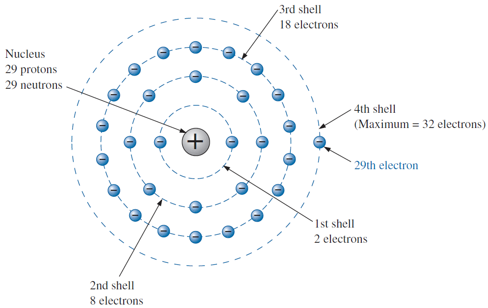
Voltage = potential difference
Separating positive and negative charges takes work, and that stored "pressure" between two points is the potential difference, or voltage. A point has a potential; between two points there is a voltage.
- V – voltage (volts, V)
- W – energy/work (joules, J)
- Q – charge (coulombs, C)
1 volt = 1 joule of energy per 1 coulomb of charge. A point at 4 V and a point at 2 V have a voltage of 2 V between them — only differences matter.
Reference: Boylestad, Ch. 2.2–2.5.
3 Current
Current is the orderly movement of electrons. Free electrons drift through the wire when a voltage pushes them; the amount of charge passing a cross-section each second is the current:
- I – current (amperes, A)
- Q – charge (coulombs, C)
- t – time (seconds, s)
1 ampere = 1 coulomb per second, and 1 coulomb is the charge of 6.242 × 10¹⁸ electrons.
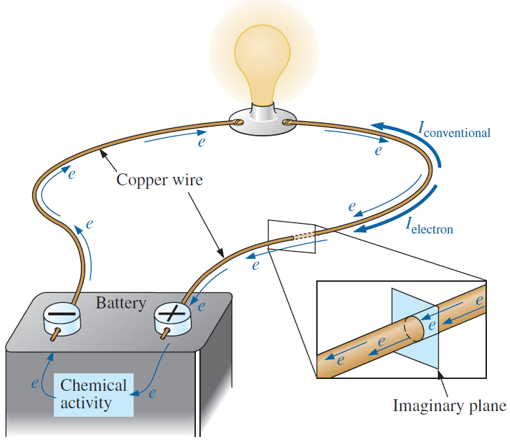
Measuring current and voltage
An ammeter measures current, so the current must flow through it → connect it in series (break the circuit and insert it). A voltmeter measures a difference between two points → connect it in parallel (across the element), without breaking anything.
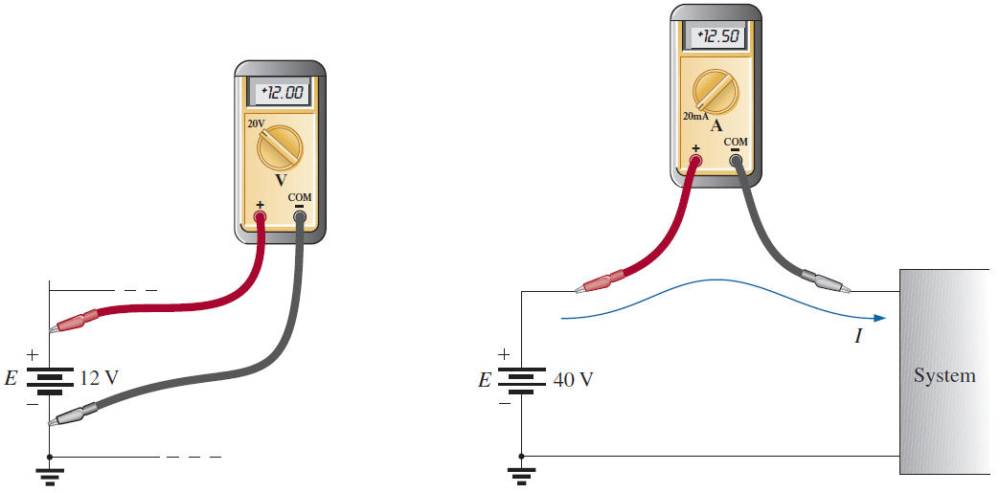
Reference: Boylestad, Ch. 2.4 & 2.10.
4 Resistance
Moving electrons collide with ions and other electrons — a kind of internal friction that converts electrical energy into heat. This opposition to current is resistance. For a uniform conductor it depends on the material, its length, its cross-section and its temperature:
- R – resistance (ohms, Ω)
- ρ – resistivity, a material property (Ω·cm in metric units)
- l – length of the conductor
- A – cross-sectional area
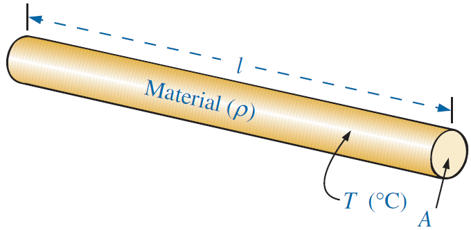
Copper has very low resistivity (≈ 1.72 × 10⁻⁶ Ω·cm) — only silver beats it. That is why wires are copper.
Temperature effects
For good conductors, resistance rises roughly linearly with temperature — more thermal vibration means more collisions. The lecture gives the linear model using the temperature coefficient α20 (measured at 20 °C):
- R₂₀ – resistance at 20 °C (Ω)
- α₂₀ – temperature coefficient of the material (1/°C), e.g. copper 0.00393
- T₁ – new temperature (°C)
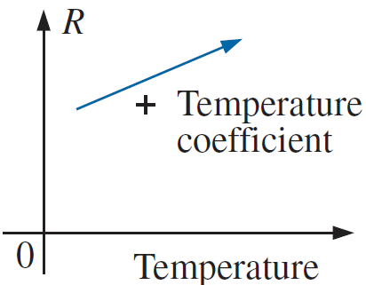
Resistor makers state sensitivity to temperature in PPM/°C (parts per million per degree). A 1000 Ω resistor rated 5000 PPM/°C changes by \Delta R = (R_{\text{nominal}}/10^{6})(\text{PPM})(\Delta T) — that's 5 Ω for each 1 °C.
Types of resistors & colour code
Resistors are either fixed or variable (the three-terminal potentiometer). Small fixed resistors carry their value as coloured bands:
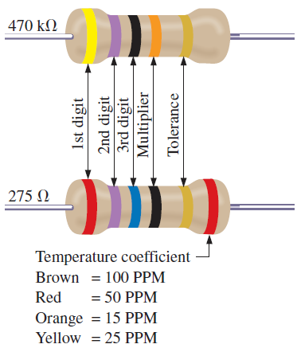
Worked example — reading a colour code
Bands: yellow, violet, orange, gold.
47 \times 10^{3} \Omega \pm 5 \% = 47 k\Omega \pm 5 \%
Yellow = 4, violet = 7, orange multiplier = 10³, gold = ±5 % tolerance.
Conductance
Sometimes it's handier to ask "how well does it conduct?" — the reciprocal of resistance:
- G – conductance (siemens, S)
- R – resistance (Ω)
Reference: Boylestad, Ch. 3.
5 Ohm's Law
The single most important equation in electronics. Current is directly proportional to the applied voltage and inversely proportional to the resistance:
- I – current (A)
- E – applied voltage / emf (V)
- R – resistance (Ω)
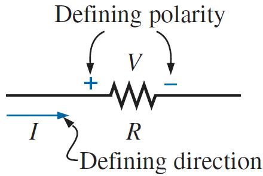
Plotting Ohm's law
For a fixed resistor the I–V graph is a straight line through the origin — resistors are linear devices. The slope tells you the resistance: a steeper line means less resistance. From any two points on the line:
- ΔV, ΔI – changes in voltage and current between two points on the curve
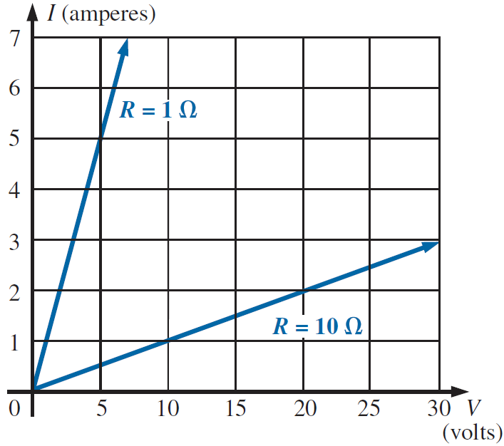
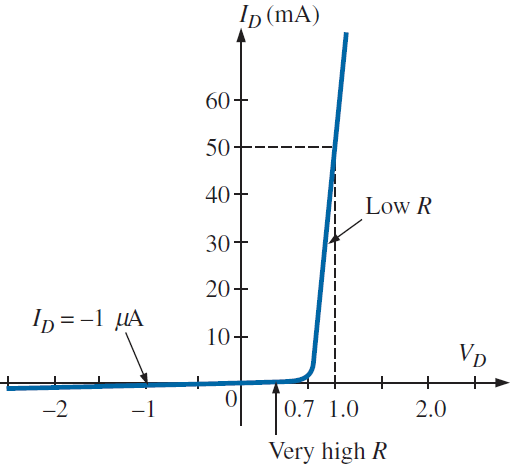
Reference: Boylestad, Ch. 4.1–4.3.
6 Power & Energy
Power is how fast energy is converted — joules per second. In a circuit it can always be found from current and voltage, and with Ohm's law it takes three equivalent forms:
- P – power (watts, W); 1 W = 1 J/s
- W – energy (J); t – time (s)
- V, I, R – voltage (V), current (A), resistance (Ω)
Energy
Energy is power sustained over time: W = P t. Utilities bill you in kilowatt-hours:
- 1 kWh = the energy of 1000 W running for 1 hour (= 3.6 MJ)
Reference: Boylestad, Ch. 4.4–4.5.
7 Series Circuits, KVL & the Voltage Divider
Elements are in series when they are connected end-to-end so the same current flows through all of them. Total resistance simply adds up:
- RT – total (equivalent) resistance seen by the source
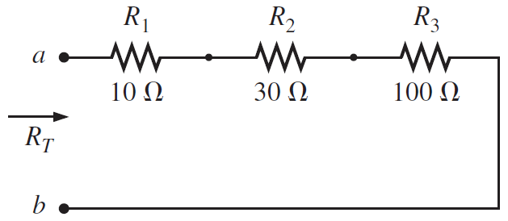
Kirchhoff's Voltage Law (KVL)
The algebraic sum of the potential rises and drops around any closed loop is zero. Walk around the loop: count source rises as + and resistor drops as −; the total must balance.
- e.g. +E − V₁ − V₂ = 0, so E = V₁ + V₂
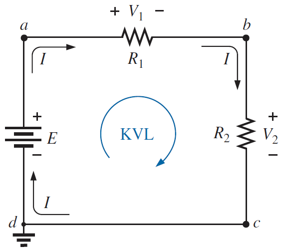
Voltage Divider Rule (VDR)
In a series circuit the applied voltage divides in proportion to resistance — the biggest resistor grabs the biggest share. Directly, without computing the current first:
- Vx – voltage across resistor Rx (V)
- E – total applied voltage (V)
- RT – total series resistance (Ω)
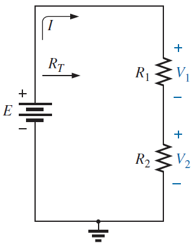
Real sources also have a small internal resistance in series with the ideal source — under load, the terminal voltage sags slightly below the emf.
Reference: Boylestad, Ch. 5.
8 Parallel Circuits, KCL & the Current Divider
Elements are in parallel when they share the same two nodes, so the same voltage appears across all of them. Conductances add, which means resistances combine by reciprocals:
- RT is always smaller than the smallest branch resistance
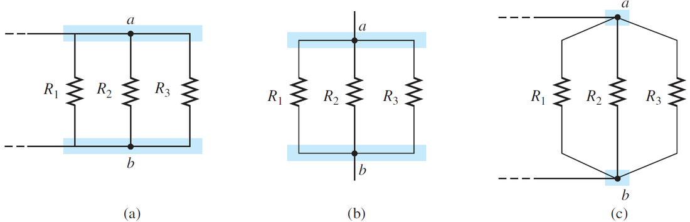
Kirchhoff's Current Law (KCL)
The sum of currents entering a junction equals the sum leaving it. Charge cannot pile up at a node.
- e.g. at a node: I₁ − I₂ − I₃ = 0
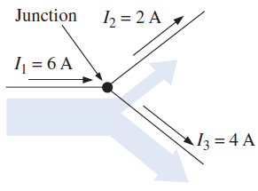
Current Divider Rule (CDR)
In parallel branches the current divides inversely with resistance — most current takes the easiest path (the smallest resistor). In general and for the very common two-branch case:
- IT – total current entering the parallel combination (A)
- RT – total parallel resistance (Ω)
- Note the two-branch form uses the other branch's resistance in the numerator
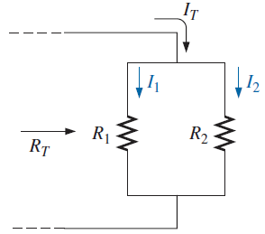
Reference: Boylestad, Ch. 6.
9 Y–Δ Conversions & Source Conversions
Y–Δ (T–π) conversions
Some resistor arrangements are neither series nor parallel. Converting a Y (star/T) pattern into an equivalent Δ (delta/π) — or back — unlocks the simplification:
- Δ→Y: each Y resistor = product of the two adjacent Δ resistors ÷ sum of all three
- Y→Δ: each Δ resistor = sum of all pairwise products ÷ the opposite Y resistor
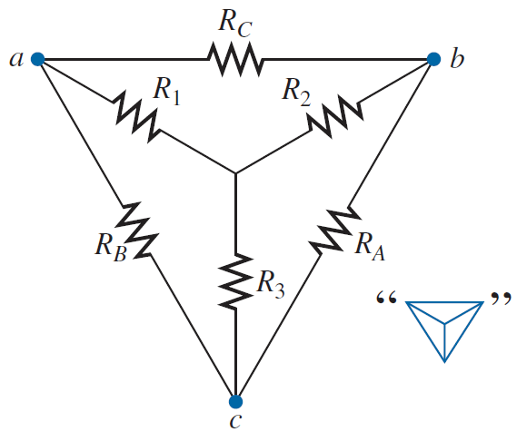
Source conversions
A real voltage source (E in series with Rs) and a real current source (I in parallel with the same Rs) are interchangeable as far as the rest of the circuit can tell:
- The internal resistance Rs keeps its value — series with E, parallel with I
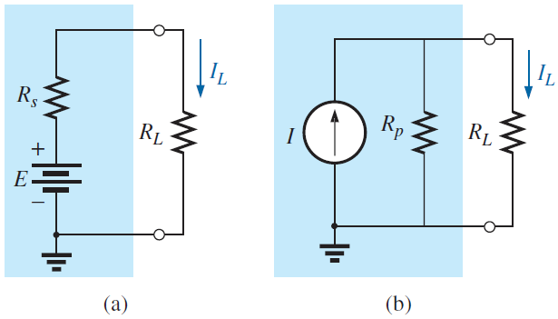
Reference: Boylestad, Ch. 8.2 & 8.12.
10 Analysis Methods: Branch, Mesh & Nodal
When a network has several sources or loops, these systematic methods always work. All three end in a small system of simultaneous equations.
Branch-current analysis
The most direct method — one unknown current per branch.
Procedure: ① assign a current to every branch (direction is your guess — a negative answer just means "other way"); ② mark resistor polarities from those directions; ③ write KVL around each independent closed loop; ④ apply KCL at the minimum number of nodes to tie the currents together; ⑤ solve.
Mesh (loop) analysis
Instead of branch currents, assign a circulating loop current to each window ("mesh") of the network — usually all clockwise. KCL is then satisfied automatically, and you only write KVL once per loop. Elements shared by two loops carry the difference of the loop currents.
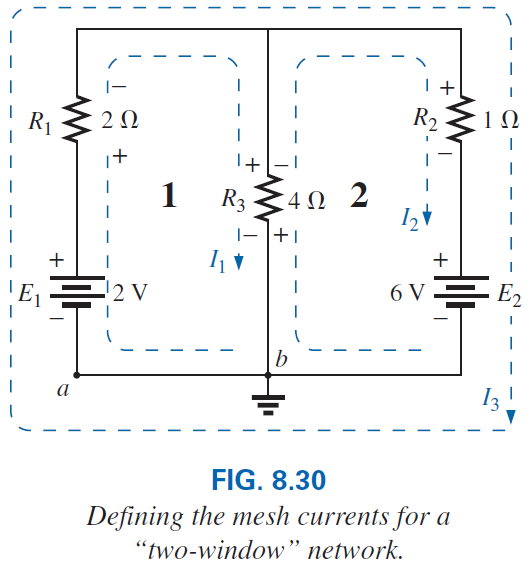
Nodal analysis
The mirror image of mesh. Pick one node as the 0 V reference; for a network of N nodes the remaining N−1 node voltages are the unknowns. Write KCL at each non-reference node, expressing every branch current with Ohm's law (I = (Va−Vb)/R), then solve.
Reference: Boylestad, Ch. 8.
11 Network Theorems: Superposition, Thévenin & Norton
Superposition theorem
The current through (or voltage across) any element equals the algebraic sum of the contributions of each source acting alone. To let one source act alone, kill all the others: replace ideal voltage sources with a short circuit and ideal current sources with an open circuit, solve, repeat per source, then add the results with their signs.
Thévenin's theorem
Any two-terminal DC network can be replaced by one voltage source ETh in series with one resistor RTh — identical behaviour at the two terminals, whatever load you connect.
Procedure: ① remove the load and mark the two terminals; ② find RTh: set all sources to zero (E → short, I → open) and compute the resistance seen from the terminals; ③ find ETh: with sources back on, compute the open-circuit voltage between the terminals; ④ redraw ETh–RTh in series and reconnect the load.
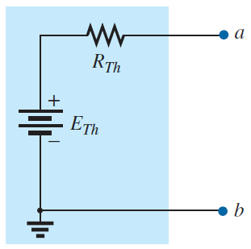
Norton's theorem
The twin statement with a current source: any two-terminal network ≡ current source IN in parallel with RN. Here IN is the short-circuit current between the terminals and RN is found exactly like RTh.
- Thévenin ⇄ Norton is just a source conversion
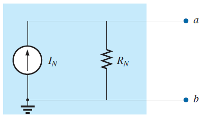
Reference: Boylestad, Ch. 9.